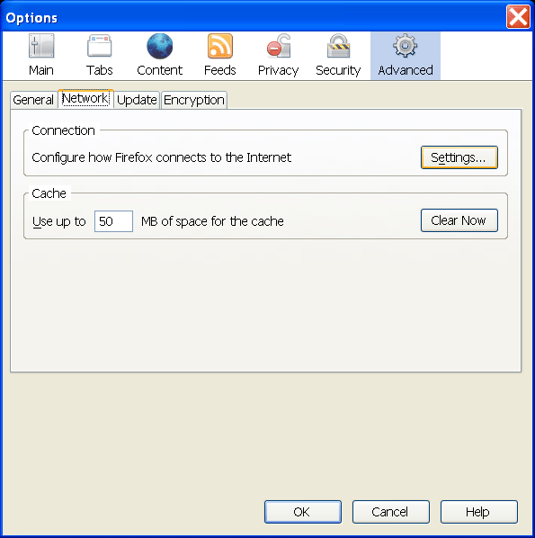
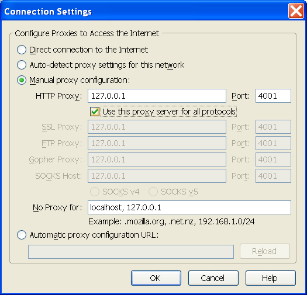

Alternative browser configuration
TOC
Alternative browser configuration
TOC  Browser setup
Alternative
browser configuration Alternative browser configuration
Browser setup
Alternative
browser configuration Alternative browser configuration
Proxy settings: Mozilla Firefox 2.x and 3.x
JonDos recommends the already preconfigured JonDoFox for secure, anonymous
surfing. It is available as a complete browser or a portable Firefox profile
for all operating systems.
To set up JonDo for Mozilla-Firefox without JonDoFox, do the following:
1.) From the menu "Tools" (Windows) or "Firefox" (Mac OS X) choose the
submenu "Options". The settings window will open. Choose the category
"Advanced" and then the tab "Network".

2.) To change the proxy server, click on the "Settings..." button. In the new
window that opens, choose "Manual proxy configuration". Activate "Use this
proxy server for all protocols" and enter "127.0.0.1" as server and "4001" as
port (without the quotation marks, of course).

If you want specify addresses where JonDo shall not be used, you can enter
those exceptions into the field No Proxy for:, separated by commas.
Note: If you set a different listen
port in JonDo, you'll have to enter this port here too, rather than
"4001".
Alternative browser configuration
TOC Browser setup
Alternative
browser configuration Alternative browser configuration